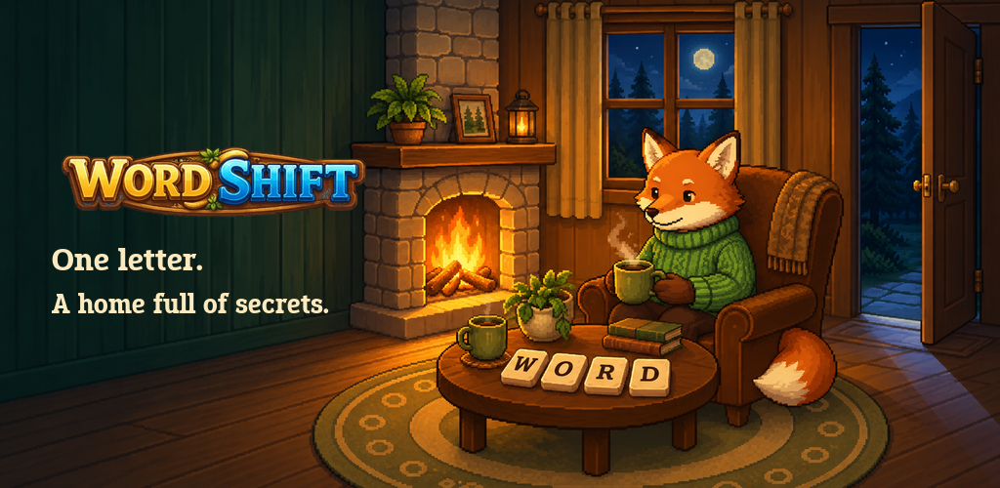
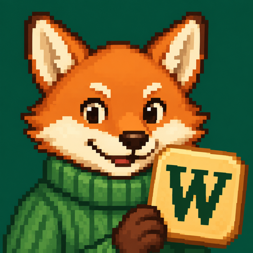

English · approved creative directionOne letter.
A home full of secrets.
A clearer puzzle hook, a lived-in woodland home, and a first glimpse of the mystery after dark.


Artwork and copy are ready. Current gameplay screenshots and trailer capture are pending.
The cards below are layout briefs, not upload screenshots. No store publication has been verified.
The eight-image story
Current gameplay capture pending
Editable layout prepared
1. One letter. Two new words.
Both results must be valid words.Current gameplay capture pending
Editable layout prepared
2. Turn words into a home.
Solve puzzles. Unlock rooms.Current gameplay capture pending
Editable layout prepared
3. Meet 13 unlikely friends.
Get to know your growing household.Current gameplay capture pending
Editable layout prepared
4. A cozy game. Mostly.
What changes after dark?Current gameplay capture pending
Editable layout prepared
5. Find your next challenge.
Reverse the chain. Shift two letters.Current gameplay capture pending
Editable layout prepared
6. A new puzzle every day.
Build a streak, one solve at a time.Current gameplay capture pending
Editable layout prepared
7. Make it your kind of cozy.
Unlock tile styles and room details.Current gameplay capture pending
Editable layout prepared
8. Your choices leave a trace.
Conversations you can return to.30-second portrait trailer
Capture and final trailer export are pending. The complete edit timeline and caption track are included as production sources.
Separate experiment challengers
Keep the current icon in the initial upload. Test one challenger at a time, with the other listing elements held constant.

Simpler Ember iconPaste-ready listing copy
WordShift: Cozy Word Puzzle
Move letters, build a woodland home, and uncover a quietly unsettling mystery
One letter. Two new words. A home full of stories.
WordShift is a cozy word puzzle game where clever letter moves help a woodland house grow. Solve word chains, welcome 13 animal friends, and discover a mystery that becomes quietly unsettling.
A SMALL MOVE. A SATISFYING PUZZLE.
Take a letter from one word and place it in the next. The word you take it from and the word you add it to must both be valid. Move the L from PLAY into PANT to make PAY and PLANT, then keep the chain going. Moved letters lock in place, so think ahead.
TURN WORDS INTO A HOME.
Earn amber through puzzles, unlock rooms, and add special details to your growing pixel-art house. Get to know Ember the fox, Panko the pangolin, Axel the axolotl, and the rest of an unusual household. Return for conversations, make choices, and revisit what you have read in your journal.
A COZY GAME. MOSTLY.
As the house grows, its warmth begins to feel different. Familiar conversations take on new meaning, and small details invite a second look. Keep playing to discover what your woodland home has been hiding. No purchase is needed to follow the main story.
FIND YOUR KIND OF CHALLENGE.
More ways to play open as you progress.
• Thousands of word puzzles across five difficulty levels
• Reverse Shift and Double Shift, with more ways to work through a chain
• Optional timed, hidden-preview, and rarer-word challenges
• Practice boards to learn new puzzle styles
• Daily challenges, streaks, and daily and weekly quests
• Unlockable tile styles and room details
Core puzzles work offline, with no account required. Online features and purchases need an internet connection. Adjust sound, music, motion, and haptics to suit you.
Contains ads and in-app purchases, including an optional auto-renewing Supporter subscription. The story includes unsettling themes and mild horror.
A little wordplay. A world to uncover.The planned screenshots must use actual React Native rendering with documented capture states. No final gameplay screenshot is included in this partial review. The completed exporter preserves full-screen proportions and separates genuine before-and-after crops in the alternate opener. This package does not establish signed Android verification or publication. The feature and icon illustrations are promotional artwork.
Full description · Alt text · Specifications and checksums